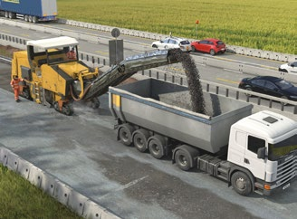
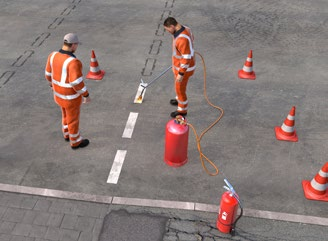

|
Allgemeines
Bei Arbeiten im und neben dem öffentlichen Verkehr ist auf ausreichende Arbeitsräume und Sicherheitsabstände zu achten. Die Verkehrsrechtliche Anordnung ist mit Verkehrszeichenplan zu beantragen und nach Erteilung zu prüfen. Berücksichtigen Sie unterschiedliche Bauzustände, z. B. für Trenn-, Fräs- und Asphaltierungsarbeiten.
Für den Baustellenverkehr sind Fahrordnungen aufzustellen und Verkehrswege festzulegen. Rückwärtsfahrten sind zu vermeiden und z. B. durch seitliche Zufahrten zur Baustelle oder Einrichten von Wendestellen soweit möglich zu reduzieren.
Können Rückwärtsfahrten nicht vermieden werden, sind zur Vermeidung von Gefährdungen für Beschäftigte folgende Maßnahmen zu ergreifen:
- Einsatz eines Kamera-Monitor-Systems
oder
- Abschrankung des Gefahrbereiches
oder
- Einsatz von Sicherungsposten/Einweisern/Einweiserinnen.
Asphalteinbau – Allgemeines
Lassen Sie bei ungünstigen Luftverhältnissen, z. B. im Tunnel, in Tiefgaragen, in Logistikhallen durch den Auftraggeber oder die Auftraggeberin den Einbau von temperaturabgesenktem Asphalt vorsehen. Lassen Sie zudem Motoren in ganz oder teilweise geschlossenen Räumen mit Partikelfilter ausstatten. Sorgen Sie außerdem für ausreichende Belüftung/Absaugung.
Stellen Sie geeignete Trennmittel zur Verfügung. Für Arbeiten auf heißen Flächen sind Sicherheitsschuhe mit wärmeisolierendem Unterbau und hitzebeständiger Sohle (z. B. S3 HI HRO) zur Verfügung zu stellen.
Walzasphalteinbau
Minimieren Sie den Aufenthalt von Personen im Walzbereich durch betriebsspezifische Festlegungen. Bei Arbeiten mit Kippgefahr sind nur Walzen mit Überrollschutzaufbau und Sicherheitsgurt einzusetzen.
Einbau von Gussasphalt
Gussasphalt soll möglichst maschinell eingebaut werden.
Bei händischem Einbau sind geschlossene Arbeitskleidung, wärmebeständige Schutzhandschuhe und Knieschutz zur Verfügung zu stellen.

|

|
Abb. 102 Großfräse mit Absaugung |
Abb. 103 Straßendemarkierungsarbeiten |
Straßenfräsarbeiten
Vor der Durchführung von Fräsarbeiten sind die vom Auftraggeber bzw. von der Auftraggeberin zur Verfügung gestellten Informationen über Gefahrstoffe im zu fräsenden Belag, z. B. Teer, zu berücksichtigen.
Nur Großfräsen mit Absaugeinrichtung einsetzen. Bei Kleinfräsen ist auf Expositionszeit und ausreichende Wasserbenetzung zu achten. Sorgen Sie durch Unterweisung und Aufsicht dafür, dass:
- der Fräskasten mit integrierter Fräswalze beim Fräsvorgang geschlossen ist,
- sich beim Fräsen niemand hinter der Fräse aufhält,
- vor Meißelwechsel Fahr- und Rotorantrieb abgeschaltet und gegen unbefugtes Ingangsetzen gesichert sind,
- bei Meißelwechsel Augenschutz benutzt wird,
- bei Mitgängerbetrieb auf ausreichenden Abstand zum Verkehrsbereich geachtet wird.
Bodenstabilisierung
Setzen Sie nur Bodenstabilisierungsmaschinen mit Kabinen ein, die den Fahrer bzw. die Fahrerin vor Staub schützen, z. B. durch Filter- oder Atem-, Druckluft-Anlagen, Kabinen sind ggf. zusätzlich mit Klimaanlage auszurüsten. Ausgestreutes Bindemittel ist möglichst schnell einzufräsen. Beachten Sie dabei die Windrichtung. Bei Staubbelastung im Baufeld oder beim Umfüllen folgende persönliche Schutzausrüstungen benutzen:
- Schutzbrille,
- Handschuhe,
- Atemschutz FFP 2,
- Geschlossene Kleidung
In Baumaschinen und Fahrzeugen ist eine Augenspülflasche mitzuführen.
Straßenmarkierungsarbeiten
Sicherheitsdatenblätter der Markierungsmaterialien beachten, z. B. bei Verwendung von Kaltplastik mit Methylmethacrylat. Erstellen Sie entsprechende Betriebsanweisungen und treffen Sie geeignete Schutzmaßnahmen.
Warnkleidung
Die verwendete Warnkleidung muss mindestens der Klasse 2 entsprechen. Bei erhöhter Gefährdung, z. B. bei Geschwindigkeiten von mehr als 60 km/h oder bei Dunkelheit, muss Warnkleidung der Klasse 3 genutzt werden (Farbe: fluoreszierendes Orange-Rot oder Gelb).
|